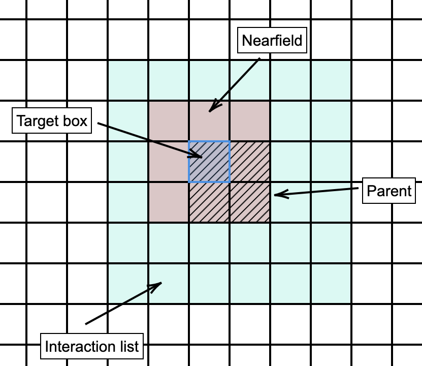

Fast Multipole Methods
Contents
Fast Multipole Methods#
Fast Multipole Methods allow the \(\mathcal{O}(N)\) computation of Green’s function interactions. While the algorithmic description is very different to \(\mathcal{H}\)-matrix methods the underlying idea of evaluating near-field interactions directly and far-field interactions approximately through low-rank representations, is similar.
There are a multitude of different types of Fast Multipole Methods. In this section we give a very high-level description that avoids technical details as far as possible which distinguish different typs of FMM.
Basic ideas#
We assume that we have \(N\) particles \(x_i\), \(i=1, \dots, N\) in \([0, 1]^d\) for \(d=2,3\). Let \(G\) be the matrix of Green’s function interactions defined by \(G[i, j] = g(x_i, x_j)\). Hence, we assume that we have the same set of source and target particles. This is no restriction.
For a given vector \(w\) we want to evaluate the matvec \(z = GW\), or in other words, the sums
As a first step we setup a quadtree/octree over \([0, 1]^d\). As opposed to the earlier descriptions, where we used an adaptive tree for simplicity we will setup a regular tree of depth \(L\). The root is level zero. The set of leaf boxes is denoted by \(\mathcal{L}\). Each box in the tree gets a unique integer identifier \(m\) that is identified with an associated box \(B_m\) in the octree/quadtree. By \(\text{level}(m)\) we denote the level of the box with identifier \(m\). The set of children of this box are denoted by \(\mathcal{C}(m)\), and the parent is denoted by \(\mathcal{P}(m)\).
We denote by \(x_{i_{\ell}^{m}}\), \(\ell=1, \dots, N_m\) the particles contained in the box \(m\in\mathcal{L}\). Hence, \(N = \sum_{m\in\mathcal{L}}N_{m}\). For simplicity we assume that all leaf boxes contain particles. In practical implementations, if a leaf box has no particles it is just omitted.
Consider the below setup on a given quadtree/octree level. The blue box is the target box. We want to compute the interactions of particles in the other boxes with the given target box.

We denote all boxes directly adjacent to our target box as nearfield and call it \(\mathcal{N}(m)\). These boxes do not satisfy an admissibility condition. Hence, we cannot use efficient low-rank evaluations with them. However, for all other boxes we could use a low-rank evaluation as those boxes satisfy an admissibility condition. This would give us some improvement as we increase \(N\). But, we are then also getting more and more direct evaluations in the nearfield and the method is not efficient.
The idea of the FMM is to deal with the nearfield by recursing down the tree. Assume that we have already computed on the parent level all admissible interactions, that is everything but the nearfield neighbours on the parent level.
We now move down again to the level of our target box and split the children of the neighbours of the parent into nearfield boxes (those adjacent to our target) and boxes in the interaction list. We denote the interaction list of a target box with index \(m\) by \(\mathcal{I}(m)\).
The interaction list is the part of the domain that could not be treated on the coarser level as it did not satisfy the admissibility condition, but can be treated on the finer level. We can now use efficient low-rank methods for this interaction list.
We recursively continue to treat the nearfield of the target box on the finer level. Once we are at the finest level we simply treat the nearfield interactions via direct evaluation.
From particles to multipole expansions#
Let \(m\in\mathcal{L}\) be a leaf index. Each particle in the associated box generates a field \(u_{i_\ell^{m}}^{ext}(x) := w_{i_{\ell}^m}g(x, x_{i_{\ell}^m})\), \(\ell=1, \dots, N_m\) that is well defined and smooth in \(\mathbb{R}^3\backslash\overline{B_{m}}\). The factor \(w_{i_{\ell}^m}\) is the corresponding element of our vector \(w\). These factors are typically called particle weights.
The total field contribution of the box \(B_{m}\) is \(u_{m}^{ext}(x) := \sum_{\ell=1}^{N_{m}}w_{i_{\ell}^m}g(x, x_{i_{\ell}^m})\).
The first operation in the FMM is the \(P2M\) operation (Particle-to-Multipole), which approximates the fields generated from the individual particles by a representation that is independent of the number of particles in the box.
With the \(P2M\) operator we define the total field \(u_m^{ext}\) in the exterior of \(B_m\) as
We do not specify here the algorithmic details but will discuss different types of \(P2M\) operators later.
The name multipole goes back to the first FMM implementations and refers to an approximation of \(u_{m}^{ext}\) by a multipole series.
Multipole-To-Multipole Operation#
We now traverse up the octree/quadtree. Consider a box \(m\) with \(1 < \text{level}(m) < L\).
The field \(u_{m}^{ext}\), valid in the exterior of \(B_{m}\) is defined by
Here, \(M2M\) is an operator that maps fields valid in the exterior of a box to a field valid in the exterior of the parent box. The implementation of the \(M2M\) operator depends on the realisation of the FMM.
The Multipole-To-Local and Local-To_Local map#
At this stage we have assigned exterior fields to all boxes in the tree from the leafs up to level 2. These are the fields generated by the source particles. Now the second phase of the FMM starts in which we evaluate the fields at the target boxes.
To understand the \(M2L\) (Multipole-To-Local) map we first need to introduce the notion of interaction list.
Given a target box \(B_m\) with index \(m\). We define the local field \(u_{m}^{local}\) by
The operator \((L2L)\) is a local-to-local map, meaning it maps a local field valid in the parent box to a local field valid in a child box. The L2L takes into account field contributions that have been computed at a coarser level. This is added up to the contributions of all the fields generated by boxes in the interaction list.
This map creates local field from the second level up down to the leaf level. On level 1 there is no interaction list yet and no contribution from the root.
Local-To-Particle Map#
This is the final step in the FMM. We have computed from the top of the tree down to the leafs all local fields generated from the interaction list and parent contributions.
At the leaf-level we compute for each box \(m\) the field values at the leaf particles \(x_{i_\ell^m}\in B_{m}\). We have three contributions, namely from the local field \(u_{m}^{local}\), from the nearfield of \(B_m\) and from the other particles in \(B_m\) itself. We denote the neighbours of \(B_{\tau}\) by \(\mathcal{N}(\tau)\). Hence, the total field value is given as
The \(L2P\) operator is usually a simple direct evaluation of fields from the representation given in a local basis.
Summarizing the FMM flow#
Let us summarize the FMM Steps.
Phase 1 (Upward traversal of tree)
Compute exterior field approximations in each leaf box (P2M)
From the leaf up to level 2 combine the exterior fields of the children boxes into an exterior field approximation of the parent box (M2M)
Phase 2 (Downward traversal of tree)
From level 2 onwards down to the leaf level compute local fields by summing up the contributions from the interaction list and from the local field of the parents (M2L + L2L)
On the leaf level evaluate the local fields at the target particle positions and add the contributions from the direct interactions with particles in neighbouring boxes (L2P + P2P)
Complexity of the FMM#
We note that the total number of boxes in an quadtree/octree is \(\mathcal{O}(N)\). We further assume that the complexity of the \(M2M\), \(M2L\) and \(L2L\) operators do not depend on the number \(N\) of particles.
In phase 1 in each leaf box we have to convert the fields generated by the source particles into exterior field expansions for each box. The cost of \(\mathcal{O}(N)\) since we have \(N\) particles.
We then use \(M2M\) operators to pass the fields upwards. For each box in level \(2\) and above this is one translation operation, hence a cost of \(\mathcal{O}(N)\).
In phase 2 we traverse the tree downwards from level 2 to the leafs. The number of boxes in the interaction list is constant, independent of \(N\). Hence, again we have a cost of \(\mathcal{O}(N)\).
Finally, at the leafs we compute the evaluation of the local fields at the particles and add in the direct neighbour contributions. Again, this is a cost of \(\mathcal{O}(N)\).
Hence, the full cost of the FMM is \(\mathcal{O}(N)\). The above estimate however only works if the cost of the translation operators is independent of \(N\). Here, the low-rank expansions come into play.
We recall that separable expansions of a given degree are the continuous equivalent of low-rank expansions. Analytic FMM methods use separable expansions into suitable basis functions of fixed degree \(k\) to represent the translation operators. This degree \(k\) is chosen independently of \(N\). Algebraic FMM methods often use mixtures of interpolation/approximation and matrix low-rank techniques to compute translation operators with a fixed rank independent of \(N\).
Types of FMM implementations#
We have so far described the general flow of an FMM. The difference between FMM realisations is in how the various translation operators are implemented.
Frequently used implementations include the following.
The classical Greengard/Rohklin FMM based on spherical harmonics expansions. This is the classical FMM as originally described by Greengard and Rohklin. It is based on approximating fields by spherical harmonic expansions and the translation of these expansions between boxes. Over the years a number of improvements have been made to these methods. They are memory efficient and fast.
Kernel-Independent FMM. The KIFMM approximates local and exterior fields by discrete single-layer potential representations over the boundary of a box. Translation operators are implemented by a mixture of approximation operators, low-rank approximations, and Fast Fourier Transforms, depending on the implementational details. These methods are considered very efficient for high accuracy requirements.
Black-Box FMM. The Black-Box FMM uses Chebychev interpolation to represent kernels. Translation operators are implemented by a mixture of low-rank approximation techniques and direct evaluation of Chebychev interpolation polynomials.